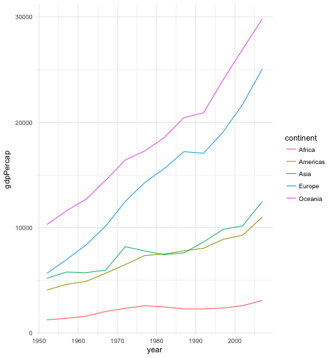
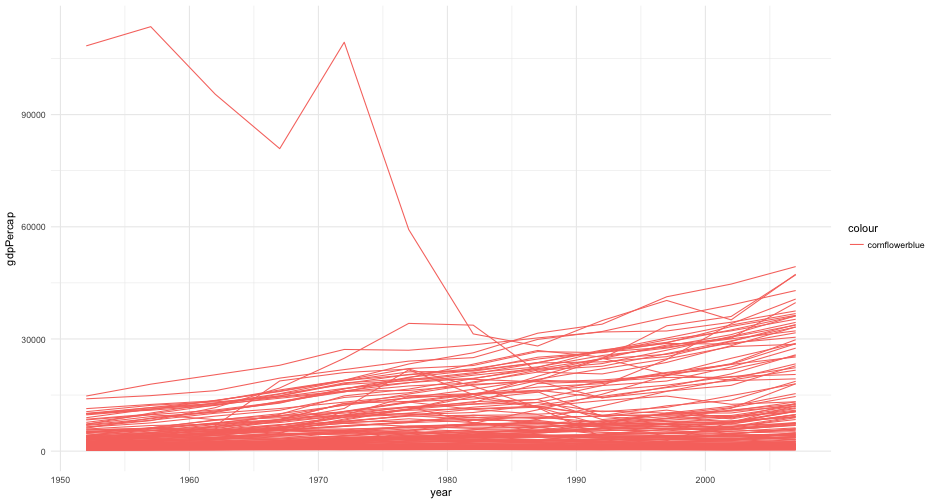

Agenda
- Review where we’ve been
- reading in data
- dplyr
- tidyr
- Where to next? (briefly)
- Lab
- Work on your final project
Tidyverse: Providing a grammar for…
- Graphics (ggplot)
- Data manipulations (dplyr)
- Tidying data (tidyr)
- Ever expanding specialized topics (not quite modeling yet, although there is some)
Reading in data
rio makes it easy
Remember there are a bunch of different options you can specify
- Different delimiters
setclassargumentheader
Occassionally, using the specific package directly might be easier (though rarely)
Labels
- haven, used under the hood by rio, tries to maintain the attributes a variable had when it was in SPSS, SAS, or STATA.
- To do this, it provides a new labelled class
- This way, no information is lost, and you can decide what to do with them
- remove labels
- coerce to factor
- If you do nothing with them, rio will treat them as numeric
- Won’t show you, simply, which have the underlying labelled class
Example from Homework 5
library(rio)
library(dplyr)
gss <- import("../../data/GSS2014merged_R6.sav", setclass = "tbl_df")
gss <- gss %>%
select(year, id, age, educ, sex, race, res16, income, partyid, polviews,
VOTE08, VOTE12, PRES08, PRES12)
head(gss)
## # A tibble: 6 x 14
## year id age educ sex race res16 income partyid polviews VOTE08
## <dbl> <dbl> <dbl> <dbl> <dbl> <dbl> <dbl> <dbl> <dbl> <dbl> <dbl>
## 1 2014 1 53 16 1 1 5 12 5 6 2
## 2 2014 2 26 16 2 1 3 12 5 5 1
## 3 2014 3 59 13 1 1 3 12 6 5 1
## 4 2014 4 56 16 2 1 3 12 5 4 1
## 5 2014 5 74 17 2 1 6 NA 3 4 1
## 6 2014 6 56 17 2 1 3 12 6 5 1
## # ... with 3 more variables: VOTE12 <dbl>, PRES08 <dbl>, PRES12 <dbl>
gss <- gss %>%
mutate(age = as.numeric(age),
educ = as.numeric(educ)) %>%
factorize()
gss
## # A tibble: 3,842 x 14
## year id age educ sex race res16 income
## <dbl> <dbl> <dbl> <dbl> <fctr> <fctr> <fctr> <fctr>
## 1 2014 1 53 16 MALE WHITE BIG-CITY SUBURB $25000 OR MORE
## 2 2014 2 26 16 FEMALE WHITE TOWN LT 50000 $25000 OR MORE
## 3 2014 3 59 13 MALE WHITE TOWN LT 50000 $25000 OR MORE
## 4 2014 4 56 16 FEMALE WHITE TOWN LT 50000 $25000 OR MORE
## 5 2014 5 74 17 FEMALE WHITE CITY GT 250000 <NA>
## 6 2014 6 56 17 FEMALE WHITE TOWN LT 50000 $25000 OR MORE
## 7 2014 7 63 12 MALE WHITE CITY GT 250000 <NA>
## 8 2014 8 34 17 MALE WHITE BIG-CITY SUBURB $25000 OR MORE
## 9 2014 9 37 10 FEMALE WHITE TOWN LT 50000 $15000 - 19999
## 10 2014 10 30 15 FEMALE OTHER CITY GT 250000 $25000 OR MORE
## # ... with 3,832 more rows, and 6 more variables: partyid <fctr>,
## # polviews <fctr>, VOTE08 <fctr>, VOTE12 <fctr>, PRES08 <fctr>,
## # PRES12 <fctr>
Last note
- It’s worth reading the help documentation.
- Lots of additional useful arguments.
Reading in the data correctly is one of the trickier parts of Homework 6.
dplyr
dplyr: A grammar for data wrangling
select(): A subset of columnsfilter(): A subset of rowsmutate(): Add or modify existing columnsarrange(): Rows in a ascending or descending ordersummarize(): A variable according to other functions (e.g.,mean(),sd()). Often used in conjunction withgroup_by()group_by: Group a data frame according to a specific variable (usually a factor)

Arguments
- dplyr always takes a data frame as its first argument.
- Subsequent argument tell dplyr what to do with the data frame.
- Returns the modified data frame
select()

(Figure from Baumer, Kaplan, & Horton, 2017)
filter()

(Figure from Baumer, Kaplan, & Horton, 2017)
select() helper funs
starts_with()ends_with()contains()matches()num_range()
Note: These can be used in other functions as well (e.g., gather), but are probably most often used within select()
Mix types
You can mix types and helper funs. You can also use select to rearrange your columns.
library(ggplot2)
diamonds %>%
select(depth, 6, starts_with("c"), price)
## # A tibble: 53,940 x 7
## depth table carat cut color clarity price
## <dbl> <dbl> <dbl> <ord> <ord> <ord> <int>
## 1 61.5 55 0.23 Ideal E SI2 326
## 2 59.8 61 0.21 Premium E SI1 326
## 3 56.9 65 0.23 Good E VS1 327
## 4 62.4 58 0.29 Premium I VS2 334
## 5 63.3 58 0.31 Good J SI2 335
## 6 62.8 57 0.24 Very Good J VVS2 336
## 7 62.3 57 0.24 Very Good I VVS1 336
## 8 61.9 55 0.26 Very Good H SI1 337
## 9 65.1 61 0.22 Fair E VS2 337
## 10 59.4 61 0.23 Very Good H VS1 338
## # ... with 53,930 more rows
filter() boolean logic
Left circle == x, right circle == y

(Figure from Wickham & Grolemund, 2017)
Create or overwrite variables: mutate
Calculate gain score
reads <- import("../../data/Project_Reads_Scores.csv", setclass = "tbl_df") %>%
janitor::clean_names()
reads %>%
mutate(gain = post_test_score - pre_test_score) %>%
select(student_id, 5, 7, gain)
## # A tibble: 48 x 4
## student_id pre_test_score post_test_score gain
## <chr> <int> <int> <int>
## 1 Virden 1 43 92 49
## 2 Virden 2 46 104 58
## 3 Virden 3 39 75 36
## 4 Virden 4 35 115 80
## 5 Virden 5 46 85 39
## 6 Virden 6 35 91 56
## 7 Virden 7 40 96 56
## 8 Virden 8 39 74 35
## 9 Virden 9 40 90 50
## 10 Virden 10 45 86 41
## # ... with 38 more rows
Overwrite a variable
- Standardize
reads %>%
mutate(pre_test_score = scale(pre_test_score),
post_test_score = scale(post_test_score)) %>%
select(student_id, 5, 7)
## # A tibble: 48 x 3
## student_id pre_test_score post_test_score
## <chr> <dbl> <dbl>
## 1 Virden 1 0.2241918 -0.4333331
## 2 Virden 2 0.6380844 0.4776153
## 3 Virden 3 -0.3276650 -1.7238434
## 4 Virden 4 -0.8795218 1.3126514
## 5 Virden 5 0.6380844 -0.9647197
## 6 Virden 6 -0.8795218 -0.5092455
## 7 Virden 7 -0.1897008 -0.1296836
## 8 Virden 8 -0.3276650 -1.7997557
## 9 Virden 9 -0.1897008 -0.5851578
## 10 Virden 10 0.5001202 -0.8888073
## # ... with 38 more rows
summarize a column (or columns)
- Average pre/post and gain
reads %>%
mutate(gain = post_test_score - pre_test_score) %>%
summarize(av_pre = mean(pre_test_score, na.rm = TRUE),
av_post = mean(post_test_score, na.rm = TRUE),
av_gain = mean(gain, na.rm = TRUE))
## # A tibble: 1 x 3
## av_pre av_post av_gain
## <dbl> <dbl> <dbl>
## 1 41.375 97.70833 56.33333
Summaries by group
- Use
group_byto get the same summaries by a grouping factor. Mean pre/post and gain by test site
reads %>%
mutate(gain = post_test_score - pre_test_score) %>%
group_by(test_site) %>%
summarize(av_pre = mean(pre_test_score, na.rm = TRUE),
av_post = mean(post_test_score, na.rm = TRUE),
av_gain = mean(gain, na.rm = TRUE))
## # A tibble: 6 x 4
## test_site av_pre av_post av_gain
## <chr> <dbl> <dbl> <dbl>
## 1 JONES 38.80000 97.80000 59.00000
## 2 JONES ALL 39.00000 98.00000 59.00000
## 3 VIRDEN 38.66667 92.46667 53.80000
## 4 VIRDEN ALL 39.00000 92.00000 53.00000
## 5 WESTSIDE 46.60000 102.86667 56.26667
## 6 WESTSIDE ALL 47.00000 103.00000 56.00000
Conditional verbs
*_if,*_allfunctions can help with efficiency
reads %>%
select_if(is.numeric) %>%
summarize_all(mean, na.rm = TRUE)
## # A tibble: 1 x 10
## pre_test_score post_test_score unit_1_score unit_2_score unit_3_score
## <dbl> <dbl> <dbl> <dbl> <dbl>
## 1 41.375 97.70833 3.270833 4.270833 5.395833
## # ... with 5 more variables: unit_4_score <dbl>, unit_5_6_score <dbl>,
## # unit_7_score <dbl>, unit_8_score <dbl>, total_score <dbl>
*_at
reads %>%
summarize_at(vars(unit_1_score, unit_3_score, unit_7_score), funs(mean, sd))
## # A tibble: 1 x 6
## unit_1_score_mean unit_3_score_mean unit_7_score_mean unit_1_score_sd
## <dbl> <dbl> <dbl> <dbl>
## 1 3.270833 5.395833 16.375 1.267257
## # ... with 2 more variables: unit_3_score_sd <dbl>, unit_7_score_sd <dbl>
Data visualization
Reviewing ggplot2 syntax
aes()accesses the variables in your dataset.- Set aesthetics globally outside of
aes() - Aesthetics set in first call to
ggplotwill bleed through to subsequent layers. - Change aesthetics within a specific layer by providing arguments within that specific function.
- Can even change x/y axes, which can be helpful if you want it defined as categorical for one layer and continuous for a second. Or if you want to plot summary data over the top of the raw data (or vice versa).
Pop Quiz 1
What’s different about these plots


Pop Quiz 2
What went wrong here?

Thinking about scales some
I know… suppposed to be all review, BUT: * Same plot, different scales. Which can you see the relation better?
ggplot(gapminder, aes(year, gdpPercap, group = country)) +
geom_line(alpha = 0.3)

ggplot(gapminder, aes(year, gdpPercap, group = country)) +
geom_line(alpha = 0.3) +
scale_y_log10(label = scales::dollar)

Pop Quiz 3
Can you reproduce this plot? (you’ll need the gapminder package/data)

What about this one?

Can you combine them?

tidy data and tidyr
Review Homework 4
- Tidy the reads dataset, minus columns 5-9
reads %>%
select(-5:-9)
## # A tibble: 48 x 20
## test_year test_type test_site student_id unit_1_score
## <chr> <chr> <chr> <chr> <int>
## 1 06/01/2016 12:00:00 AM YEAR END VIRDEN Virden 1 3
## 2 06/01/2016 12:00:00 AM YEAR END VIRDEN Virden 2 5
## 3 06/01/2016 12:00:00 AM YEAR END VIRDEN Virden 3 4
## 4 06/01/2016 12:00:00 AM YEAR END VIRDEN Virden 4 4
## 5 06/01/2016 12:00:00 AM YEAR END VIRDEN Virden 5 2
## 6 06/01/2016 12:00:00 AM YEAR END VIRDEN Virden 6 5
## 7 06/01/2016 12:00:00 AM YEAR END VIRDEN Virden 7 5
## 8 06/01/2016 12:00:00 AM YEAR END VIRDEN Virden 8 4
## 9 06/01/2016 12:00:00 AM YEAR END VIRDEN Virden 9 6
## 10 06/01/2016 12:00:00 AM YEAR END VIRDEN Virden 10 4
## # ... with 38 more rows, and 15 more variables: unit_1_percent <chr>,
## # unit_2_score <int>, unit_2_percent <chr>, unit_3_score <int>,
## # unit_3_percent <chr>, unit_4_score <int>, unit_4_percent <chr>,
## # unit_5_6_score <int>, unit_5_6_percent <chr>, unit_7_score <int>,
## # unit_7_percent <chr>, unit_8_score <int>, unit_8_percent <chr>,
## # total_score <int>, total_percent_correct <chr>
Common mistakes
- Forget to filter out summary rows
- Multiple gathers
Common thought process
gatheronce for raw scores, and a second time for percentages.- Anything wrong with this?
library(tidyr)
double_gather <- reads %>%
select(4, 1:3, 10:23) %>%
filter(student_id != "All Students (Average)") %>%
gather(unit, score, contains("score")) %>%
gather(unit2, percent, contains("percent")) %>%
mutate(unit = readr::parse_number(unit)) %>%
select(-unit2)
double_gather
## # A tibble: 2,205 x 7
## student_id test_year test_type test_site unit score
## <chr> <chr> <chr> <chr> <dbl> <int>
## 1 Virden 1 06/01/2016 12:00:00 AM YEAR END VIRDEN 1 3
## 2 Virden 2 06/01/2016 12:00:00 AM YEAR END VIRDEN 1 5
## 3 Virden 3 06/01/2016 12:00:00 AM YEAR END VIRDEN 1 4
## 4 Virden 4 06/01/2016 12:00:00 AM YEAR END VIRDEN 1 4
## 5 Virden 5 06/01/2016 12:00:00 AM YEAR END VIRDEN 1 2
## 6 Virden 6 06/01/2016 12:00:00 AM YEAR END VIRDEN 1 5
## 7 Virden 7 06/01/2016 12:00:00 AM YEAR END VIRDEN 1 5
## 8 Virden 8 06/01/2016 12:00:00 AM YEAR END VIRDEN 1 4
## 9 Virden 9 06/01/2016 12:00:00 AM YEAR END VIRDEN 1 6
## 10 Virden 10 06/01/2016 12:00:00 AM YEAR END VIRDEN 1 4
## # ... with 2,195 more rows, and 1 more variables: percent <chr>
What’s going on?
double_gather %>%
count(student_id)
## # A tibble: 45 x 2
## student_id n
## <chr> <int>
## 1 Jones 1 49
## 2 Jones 10 49
## 3 Jones 11 49
## 4 Jones 12 49
## 5 Jones 13 49
## 6 Jones 14 49
## 7 Jones 15 49
## 8 Jones 2 49
## 9 Jones 3 49
## 10 Jones 4 49
## # ... with 35 more rows
n rows by n gathers
- Assuming 7 columns are gathered each time:
expo <- tibble(gathers = 1:5, nrows = 7^(1:5))
ggplot(expo, aes(gathers, nrows)) + geom_line()

Alternative
- Gather all, then spread. BUT, requires common names to parse out the variables that are currently stored in the column names.
names(reads)[grep("\\d_\\d", names(reads))] <- c("unit_5-6_score", "unit_5-6_percent")
reads_tidy <- reads %>%
select(4, 1:3, 10:23) %>%
filter(student_id != "All Students (Average)") %>%
gather(var, val, -1:-4) %>%
separate(var, c("dis", "unit", "type"), sep = "_") %>%
select(-dis) %>%
spread(type, val)
reads_tidy
## # A tibble: 315 x 7
## student_id test_year test_type test_site unit percent
## * <chr> <chr> <chr> <chr> <chr> <chr>
## 1 Jones 1 06/01/2016 12:00:00 AM YEAR END JONES 1 16%
## 2 Jones 1 06/01/2016 12:00:00 AM YEAR END JONES 2 16%
## 3 Jones 1 06/01/2016 12:00:00 AM YEAR END JONES 3 20%
## 4 Jones 1 06/01/2016 12:00:00 AM YEAR END JONES 4 33%
## 5 Jones 1 06/01/2016 12:00:00 AM YEAR END JONES 5-6 30%
## 6 Jones 1 06/01/2016 12:00:00 AM YEAR END JONES 7 63%
## 7 Jones 1 06/01/2016 12:00:00 AM YEAR END JONES 8 53%
## 8 Jones 10 06/01/2016 12:00:00 AM YEAR END JONES 1 12%
## 9 Jones 10 06/01/2016 12:00:00 AM YEAR END JONES 2 12%
## 10 Jones 10 06/01/2016 12:00:00 AM YEAR END JONES 3 20%
## # ... with 305 more rows, and 1 more variables: score <chr>
Where to next?
- Joins (next week)
- strings (Week 8)
- Factors & Dates (Week 9)
- Project presentations
- Advanced applications - things we didn’t cover in the course (Week 10)
- Project presentations
The above means the first project presentations will be made 3 weeks from today! * Presentation time slots will be randomly assigned. You’ll have access to the code that was used to produce the random assignment.
Quick challenge (15 minutes), then final projects
- The following plot comes from datausa for Oregon residents.
- The data are stored in a file called insurance_coverage.csv
- Load the data into R and reproduce the plot as best you can

My method
- Load the data
insurance <- import("../../data/insurance_coverage.csv", skip = 3, setclass = "tbl_df") %>%
janitor::clean_names()
## Warning in fread(skip = 3, input = structure("../../data/
## insurance_coverage.csv", class = c("rio_csv", : Stopped reading at empty
## line 41 but text exists afterwards (discarded): PK
insurance
## # A tibble: 36 x 11
## in_oregon_csvage_bucket insurance_name insurance year
## <chr> <chr> <chr> <int>
## 1 insurance_18to24 healthcare coverage has_insurance 2014
## 2 insurance_18to24 healthcare coverage has_insurance 2014
## 3 insurance_25to34 healthcare coverage has_insurance 2014
## 4 insurance_25to34 healthcare coverage has_insurance 2014
## 5 insurance_35to44 healthcare coverage has_insurance 2014
## 6 insurance_35to44 healthcare coverage has_insurance 2014
## 7 insurance_45to54 healthcare coverage has_insurance 2014
## 8 insurance_45to54 healthcare coverage has_insurance 2014
## 9 insurance_55to64 healthcare coverage has_insurance 2014
## 10 insurance_55to64 healthcare coverage has_insurance 2014
## # ... with 26 more rows, and 7 more variables: geo_name <chr>, geo <chr>,
## # sex_name <chr>, sex <chr>, hc_pop <int>, hc_pop_moe <dbl>,
## # hc_pop_rca <dbl>
Compute percentages
smry <- insurance %>%
group_by(in_oregon_csvage_bucket, sex_name) %>%
summarize(by_sex = sum(hc_pop)) %>%
ungroup() %>%
mutate(percentage = by_sex /sum(by_sex))
smry
## # A tibble: 18 x 4
## in_oregon_csvage_bucket sex_name by_sex percentage
## <chr> <chr> <int> <dbl>
## 1 insurance_18to24 Female 315069 0.04340083
## 2 insurance_18to24 Male 308047 0.04243355
## 3 insurance_25to34 Female 471116 0.06489635
## 4 insurance_25to34 Male 428039 0.05896248
## 5 insurance_35to44 Female 462859 0.06375894
## 6 insurance_35to44 Male 447112 0.06158979
## 7 insurance_45to54 Female 463471 0.06384325
## 8 insurance_45to54 Male 446924 0.06156389
## 9 insurance_55to64 Female 523872 0.07216350
## 10 insurance_55to64 Male 476654 0.06565921
## 11 insurance_65to74 Female 398558 0.05490146
## 12 insurance_65to74 Male 363970 0.05013696
## 13 insurance_6to17 Female 544234 0.07496837
## 14 insurance_6to17 Male 573822 0.07904412
## 15 insurance_75plus Female 292121 0.04023974
## 16 insurance_75plus Male 215312 0.02965928
## 17 insurance_under_6 Female 260425 0.03587361
## 18 insurance_under_6 Male 267910 0.03690467
Reorder and relevel age ranges
- This was really tricky - we haven’t really talked about this yet
smry$in_oregon_csvage_bucket <- gsub("insurance_", "", smry$in_oregon_csvage_bucket)
smry <- smry %>%
mutate(age_range = factor(in_oregon_csvage_bucket,
levels = c("under_6", "6to17", "18to24", "25to34",
"35to44", "45to54", "55to64", "65to74",
"75plus"),
labels = c("< 6", "6-17", "18-24", "25-34", "35-44",
"45-54", "55-64", "65-74", "75 +")))
Produce the plot
ggplot(smry, aes(age_range, percentage, fill = sex_name)) +
geom_bar(stat = "identity", alpha = 0.9) +
scale_fill_manual(values = c("firebrick3", "#323560")) +
scale_y_continuous(name = "SHARE",
breaks = seq(0, 0.14, 0.02),
labels = scales::percent) +
xlab("") +
ggthemes::theme_hc()

Make it interactive
library(plotly)
p <- ggplot(smry, aes(age_range, percentage, fill = sex_name)) +
geom_bar(stat = "identity", alpha = 0.9) +
scale_fill_manual(values = c("firebrick3", "#323560")) +
scale_y_continuous(name = "SHARE",
breaks = seq(0, 0.14, 0.02),
labels = scales::percent) +
xlab("") +
ggthemes::theme_hc()
ggplotly(p)